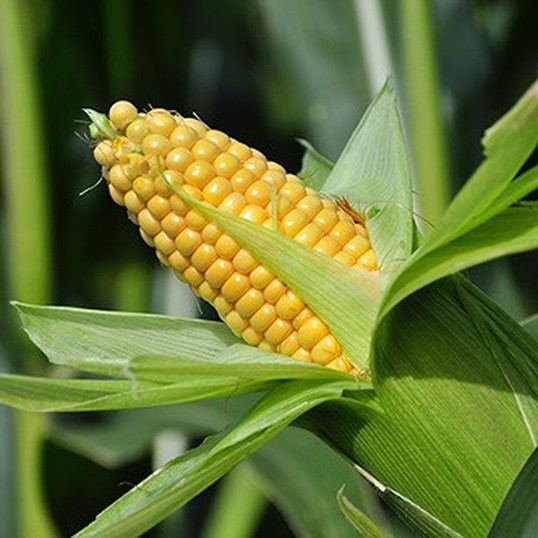
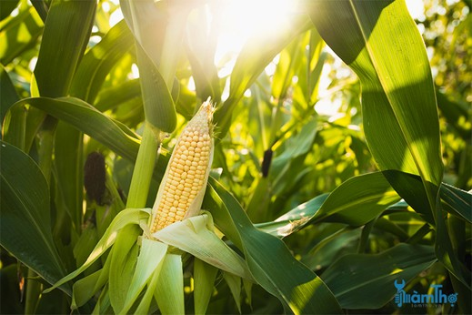
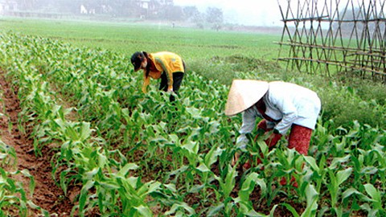

Hạt giống Bắp Ngọt là sự lựa chọn hàng đầu của nhiều nông dân nhờ vào độ chuẩn giống cao, khả năng nảy mầm mạnh mẽ và khả năng chống sâu bệnh hiệu quả. Nếu bạn đang cần tìm loại hạt giống này, hãy đặt mua ngay tại đây. Chúng tôi cũng sẵn sàng hướng dẫn chi tiết về cách trồng Bắp Ngọt từ hạt giống để giúp bạn đạt kết quả tối ưu.
Cách trồng Hạt giống Bắp Ngọt từ hạt giống
Cách ươm hạt
- Ngâm hạt giống với nước ấm (tỷ lệ 2 sôi + 3 lạnh) trong 3-6 tiếng.
- Dùng khăn ẩm và hộp nhựa để ủ hạt giống đã ngâm đến khi hạt nứt nanh (khoảng 2-5 ngày), duy trì độ ẩm.
- Sử dụng ly nhựa tái chế hoặc khay để ươm cây con (độ sâu tối thiểu 10cm).
- Sử dụng giá thể ươm hạt: 50% mụn dừa đã xử lý + 50% phân hữu cơ đã ủ oai.

Cách trồng giống cây này
Đất trồng chọn lựa ra sao?
Bạn có thể sử dụng đất hữu cơ trộn sẵn hoặc tự trộn theo tỷ lệ: 50% đất thịt + 10% mụn dừa sạch + 10% trấu hun + 10% trấu sống hoặc đá perlite + 20% phân hữu cơ.
Ánh sáng cần lưu ý gì?
Trồng cây ở nơi có nhiều nắng trực tiếp.

Chăm sóc cây giống Bắp Ngọt
- Tưới nước: Tưới sáng sớm và chiều mát tùy vào thời tiết, tránh tưới ban đêm.
- Phân bón: Bổ sung phân hữu cơ 2 tuần/lần, kết hợp phân NPK.
- Phòng trừ sâu bệnh: Sử dụng thuốc sinh học để ngừa sâu đục thân, sâu xám, bệnh rỉ sắt…
- Loại bỏ trái nhỏ: Giữ lại trái to để đạt chất lượng cao.

Bắp Ngọt bao lâu thu hoạch được?
Tùy giống ngô, thời gian thu hoạch dao động từ 60-70 ngày hoặc hơn 3 tháng.
Cam kết của Hạt Giống Nông Nghiệp
- Giao đúng hàng, đủ hàng
- Kiểm hàng trước khi nhận
- Đổi trả hàng 14 ngày
- Hàng đóng gói nguyên vẹn, còn hạn sử dụng
Hạt giống Bắp Ngọt đã trở thành một sản phẩm phổ biến và được nhiều người nông dân tin tưởng trong nhiều năm qua. Nhờ vào năng suất cao, thời gian thu hoạch nhanh và chất lượng tuyệt hảo, đây là lựa chọn lý tưởng mà bạn không nên bỏ qua.